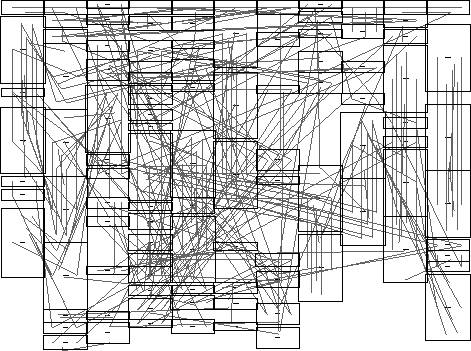
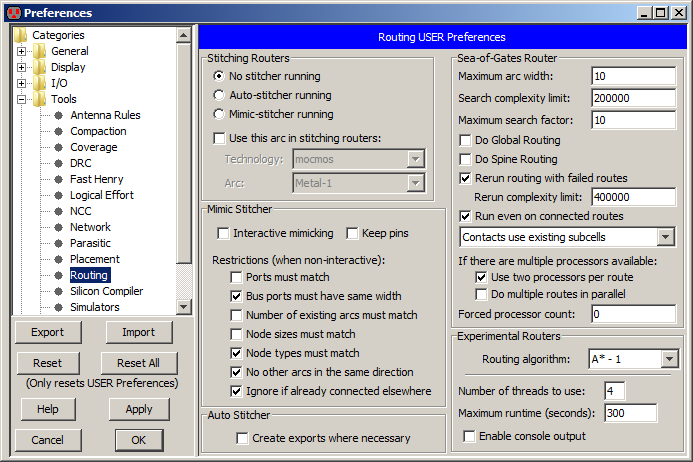

The routing tool contains a number of different subsystems for creating wires.
Two stitching routers can be used in array-based design to connect adjoining cells.
A maze-router runs individual wires.
A river-router is available for running multiple parallel wires.
The sea-of-gates router handles many wires in arbitrary connection situations.
The clock-router builds balanced trees that guarantee constant-length paths to each destination cell.
Finally, there are six experimental routers, based on the A* and the Lee/Moore algorithms.
Unrouted Arcs
|
All of the non-stitching routers make use of the "Unrouted Arc",
a thin-line arc that can connect any two components.
Creating "rats nests" of these arcs forms a graphical specification that the router can use.
The unrouted arc is from the Generic Technology
(see Section 7-6-3).
To create one, use the Get Unrouted Wire command (in menu Tools / Routing).
|  |
Then use standard wiring commands to run the unrouted arc.
Another way to get unrouted wires is to select all or part of an existing route
(made with any arc) and use the Unroute Network or Unroute Segment commands.
Unroute Network replaces all arcs on the selected network whereas Unroute Segment
only removes the selected segment of the network that runs between termination or forking points.
Another way to get Unrouted arcs for router input is to use the
Copy Routing Topology and Paste Routing Topology commands.
These copy the network topology from one cell (the "copied" cell) to another cell (the "pasted" cell).
The copied cell should be properly routed.
The Paste Routing Topology command uses node and arc names to associate the two cells.
Routing Exclusion
You can tell routers to avoid certain layers in specified areas by placing a "Routing Exclusion" node in those areas.
This exclusion layer is created by clicking the "Misc." entry of the component menu and selecting "Routing Exclusion"
(see Section 7-6-3).
When first placed, you are prompted for a list of metal layers that are not allowed to run underneath it.
This list can be a single number ("2" to exclude Metal-2),
a comma-separated list ("4,6" to exclude Metals 4 and 6),
or a range ("3-5" to exclude Metals 3, 4, and 5).
You can also use "ALL" to exclude all layers under this node.
Currently, only the Sea-of-Gates router handles routing exclusion
(see Section 9-6-6).
Routing Mode
When a circuit has been correctly placed, and the unrouted arcs are connected,
all that remains is the routing.
During this phase, it is important that the circuit not change.
To ensure this, check "Routing mode (cannot change connectivity)" (in menu File / Preferences..., "General" section, "Selection" tab).
While in Routing Mode, you can select only arcs (not nodes) and you cannot make changes to the circuit.
Preferences
The Routing Preferences (in menu File / Preferences..., "Tools" section, "Routing" tab)
controls all of the different routers.
The section in the upper-left applies to the two stitching routers (Mimic and Auto).
Specific sections apply to specific routers
(see Section 9-6-3 for the Mimic Stitcher,
Section 9-6-2 for the Auto Stitcher, and
Section 9-6-6 for the Sea-of-Gates router).

Experimental Routers
Six experimental routers are available under the Experimental Routers submenu.
Three of them are based on the A* algorithm and three are based on the Lee/Moore algorithm.
In each case, the first one is the most stable.